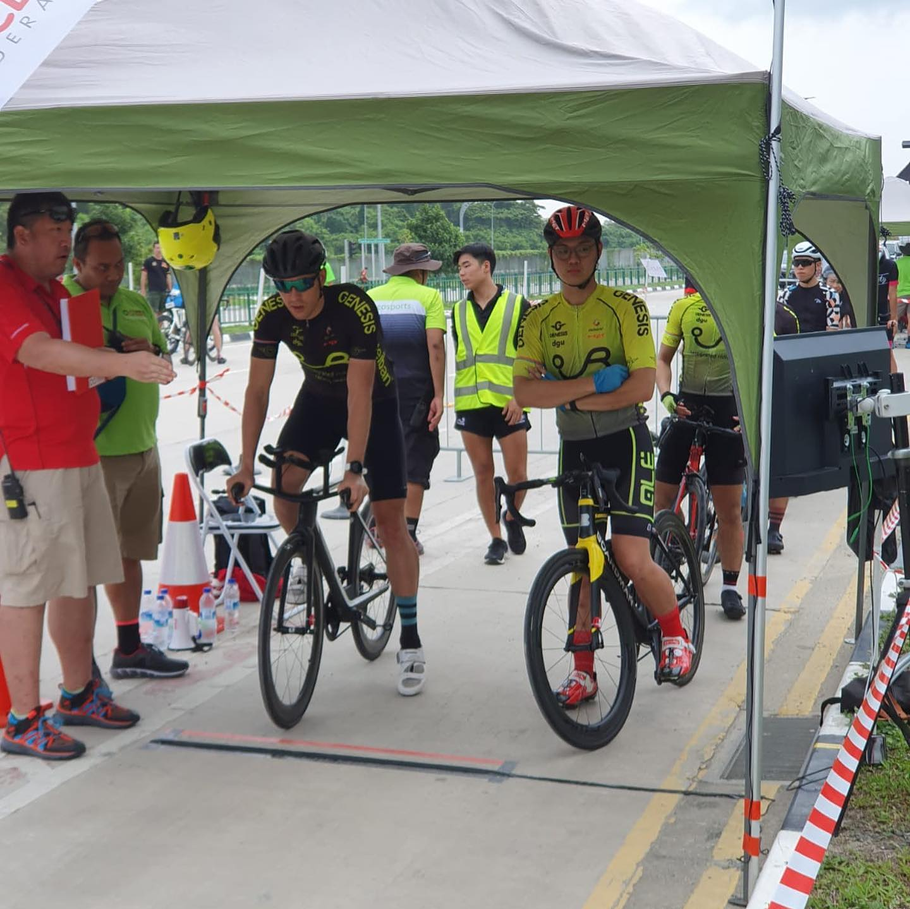
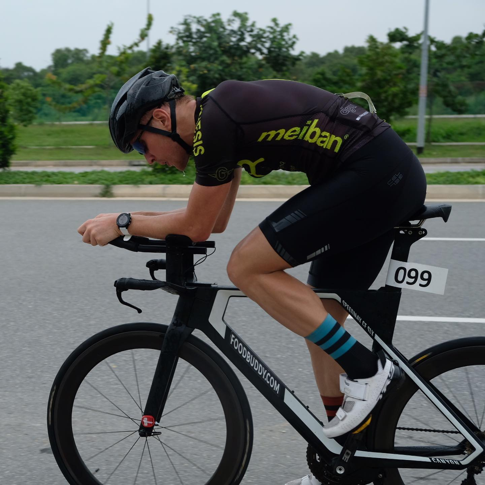
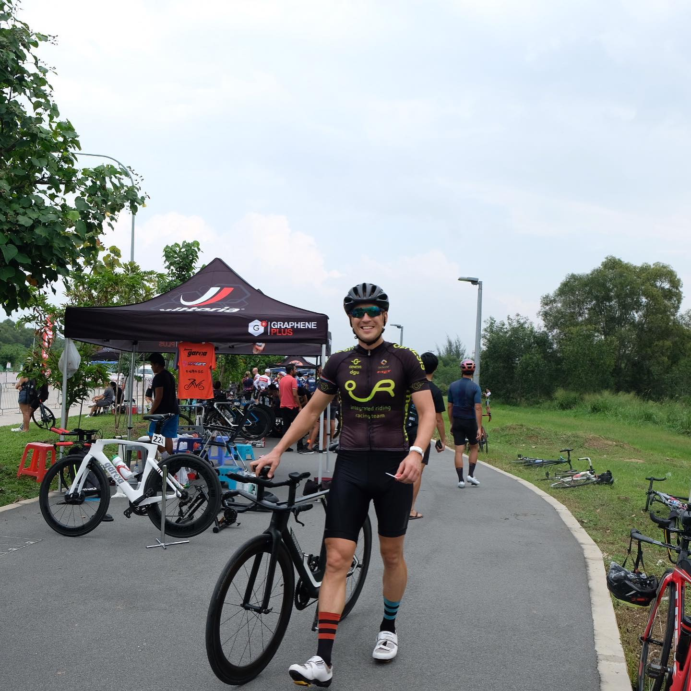

Today our racing team @team_integratedriding participated in Individual Time Trial UCI race. I came 5th out of 27 cyclists in my age group! I’m happy with my result - not bad for 2 weeks without proper training 👍🏼 Thanks to the event organisers and to @integrated_riding for fantastic team support 👏🏼💪🏼 — #integratedridingracingteam #integratedriding #ocbccycle #singapore #singaporecycling #cyclingsg #triathlon #ironmantri #swimbilerun #canyonbikes #timetrial #individualtimetrial
2019-06-30 17:41:31
Back to main page